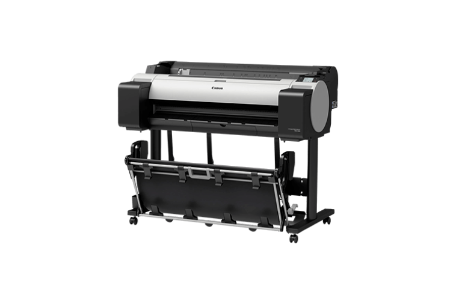

 Устройство TM-300 оснащено совершенно новым набором 5-цветных пигментных чернил. Эти чернила были разработаны для создания тонких линий и четкого текста как на бумаге для струйной, так и для лазерной печати. Объедините эти пигментные чернила с водостойкими носителями, и вы получите распечатанный рисунок, который сможет выдержать сложные внешние условия, особенно на открытых площадках, таких как строительные площадки. Доступен в емкостях для чернил объемом 130 или 300 мл. В стандартную комплектацию TM-300 входит 490 мл чернил. TM-300 хорошо подходит для работы в офисе, поскольку он на 60% тише, чем предыдущие принтеры imagePROGRAF, и меньше отвлекает на рабочем месте. TM-300 оснащен 3-дюймовой цветной сенсорной панелью управления, позволяющей легко просматривать информацию о принтере, а также выполнять простые операции. Быстрая печать заданий имеет решающее значение на рабочем месте и в офисе. Подключение к сети Wi-Fi позволяет передавать файлы технических чертежей и ускорять рабочий процесс, что идеально подходит для печати больших объемов. Маршрутизатор Wi-Fi не требуется, что может обеспечить большую свободу при установке. Система вспомогательного резервуара для чернил позволяет использовать практически все доступные чернила в резервуаре до его замены, что помогает избежать траты чернил. Пустые резервуары также можно заменять на лету, не останавливая принтер. Это чрезвычайно полезно при выполнении длинных заданий на печать.
ТЕХНИЧЕСКИЕ ХАРАКТЕРИСТИКИ:
Тип принтера:
5 цветов — 914 мм/36"
Разрешение печати:
2400 x 1200 точек на дюйм
Категория чернил: Пигментные чернила: черный, матовый черный, голубой, пурпурный, желтый
Скорость печати: Чертежи САПР (Обычная бумага (размер страницы A0):
40 сек. (быстрый экономичный режим)
46 сек. (быстрый режим)
1 мин 14 сек. (стандартный режим)
Плакат (Обычная бумага (размер страницы A0):
44 сек. (быстрый режим)
1 мин 18 сек. (стандартный режим)
(Бумага с покрытием (размер страницы A0):
1 мин 41 сек. (быстрый режим)
2 мин 36 сек. (стандартный режим)
Ширина материала для печати: Рулонные носители: 203,2–917 мм
Отдельные листы: 203,2–917 мм
Максимальная длина бумаги при печати:
Рулонные носители: 18 м (зависит от используемого приложения и ОС)
Отдельные листы: 1,6 м
Стандартные интерфейсы:
USB порт B: встроенный Hi-Speed USB
Ethernet: IEEE 802.3 10-base-T/IEEE 802.3u 100base-TX/IEEE 802.3ab 1000base-T/IEEE 802.3x, полнодуплексный
Беспроводная сеть: IEEE802.11n/IEEE802.11g/IEEE802.11b
Расходные материалы:
Картридж PFI-120BK черный Black 130 мл
Картридж PFI-120C синий (голубой) Cyan 130 мл
Картридж PFI120M пурпурный (красный) Magenta 130 мл
Картридж PFI120MBK матовый черный Matte Black 130 мл
Картридж PFI120Y желтый Yellow 130 мл
Картридж PFI-320MBK черный Matte Black 300 мл
Картридж PFI-320BK черный Black 300 мл
Картридж PFI-320M пурпурный (красный) Magenta 300 мл
Картридж PFI-320C синий (голубой) Cyan 300 мл
Картридж PFI-320Y желтый Yellow 300 мл
Печатающая головка Print Head PF-06 ресурс 20 000 стр.
Картридж для сбора отработанных чернил MC-31